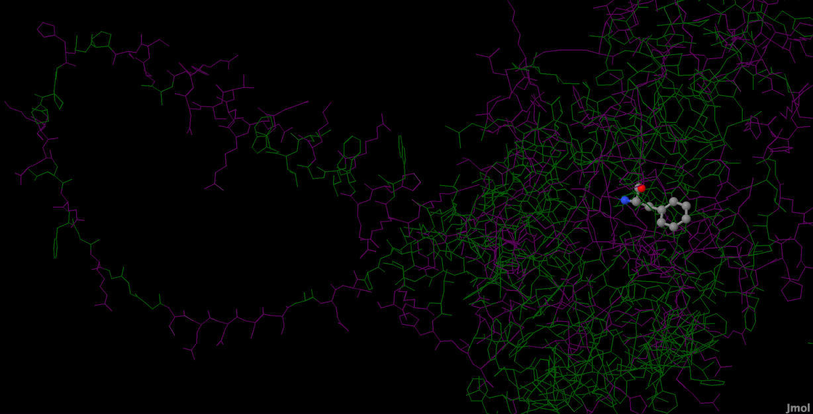

Esta actividad pretende sustituir la primera Phe de nuestra proteína por una Tyr. La Phe y la Tyr se diferencian en que la Tyr lleva un OH extra unido al fenilo como se puede observar en la siguiente imagen:
La mutación de una Phe por una Tyr podría causar impediemntos estéricos. Esto es lo que se va a comprobar en este ejercicio.
En primer lugar tenemos que calcular la distancia media que existe entre el C del fenilo (CZ) y el O del OH de las Tyr de las proteínas. Esto vendrá representado por el vector "v" que se obtiene multiplicando el módulo de "v" por un vector director para obtener la dirección y el sentido del vector "v". El módulo se calcula haciendo la media de la distancia entre CZ y O de varias Tyr mientras que el vector director se calcula diviendo el vector D entre el módulo de D. "D" será la distancia entre CG y CZ, siendo CG el carbono que une el fenol al resto de la molécula. Se cogen estos átomos puesto que el OH se encuentran en el mismo plano que en anillo aromático y, por tanto, consideramos que el vector v tendrá el mismo vector director que el vector D. Por último, hay que calcular las coordenadas del nuevo O y para ello, como el vector "v" es la distancia entre el O y CZ, podemos despejar las coordenadas del O. En este sentido, las coordenadas del "O" se calculan sumando el vector "v" a CZ de la Phe. Las ecuaciones utilizadas son las siguientes:
Se ha desarrollado un programa que permite cargar un PDB y que recorre este PDB buscando Tyr para hallar la media de las distancias entre el OH y el CZ. Además, busca la primera Phe para obtener los datos necesarios para calcular el vector director. Finalmente, al pulsar sobre el botón "obtener coordenadas O", se muestran las coordenadas correspondientes al O que habría que añadir en el PDB si quisíeramos mutar una Phe por una Tyr. El código utilizado es el siguiente:
procedure TForm1.Button3Click(Sender: TObject);
var
NumTyr, j, n, c:integer;
O, V, OHTyr, CZTyr, CZPhe: TPunto;
moduloV, media, suma:real;
D, U, vector:Tpunto;
begin
suma:=0;
NumTyr:=0;
c:=0;
for j:=1 to P.NumResiduos do
begin
if P.Res[j].ID3='TYR' then
begin
n:=P.Res[j].O;
OHTyr:=P.Atm[n+6].Coor;
CZTyr:=P.Atm[n+7].Coor;
V:=DifV(OHTyr,CZTyr);
moduloV:=modulo(V);
suma:=suma+moduloV;
NumTyr:=NumTyr+1;
end;
if (P.Res[j].ID3='PHE') and (c=0) then
begin
n:=P.Res[j].O;
CG:=P.Atm[n+1].Coor;
CZPhe:=P.Atm[n+6].Coor;
D:=DifV(CZPhe,CG);
U.X:=D.X/modulo(D);
U.Y:=D.Y/modulo(D);
U.Z:=D.Z/modulo(D);
c:=c+1;
end;
end;
media:=suma/NumTyr;
vector:=EscV(media,U);
O:=SumV(V,CZPhe);
Memo2.Lines.Add('Coordenadas del O transformado:');
Memo2.Lines.Add('-------------------------------------');
Memo2.Lines.Add('Coordenada X:'+Formatfloat('0.000',O.x));
Memo2.Lines.Add('Coordenada Y:'+Formatfloat('0.000',O.y));
Memo2.Lines.Add('Coordenada Z:'+Formatfloat('0.000',O.z));
end;
NOTA: este programa toma los datos de OH, CZ de la Tyr y de la Phe y CG en función de a cuántas líneas del PDB se encuentra de la línea del O. El PDB que yo he utilizado, en el caso de la Tyr, el OH se encuentra a 6 líneas y el CZ a 7 líneas. En el caso de la Phe, el CG se encuentra a 1 línea del O y el CZ a 6 líneas.
A continuación, se edita el PDB cambiando el nombre del residuo de la primera Phe por "Tyr". La primera Phe corresponde al residuo 31. Además, hay que añadir una nueva línea, la del OH, que contendrá las coordenadas calculadas con la aplicación de Lazarus. Por tanto, el PDB original y el mutado será:
El cambio de la Phe por una Tyr tiene como consecuencia que pasamos de tener un residuo apolar a uno muy polar. Por tanto, el oxígeno puede originar impedimentos estéricos. Además, puede ser que al introducir un compuesto polar, si está en una región apolar toda la región que se encuentre próxima al oxígeno se verá afectada. También puede afectar al centro activo de la proteína o la estructura terciaria de esta.
A continuación se puede observar la representación obtenida en JMOL en la que he representado la proteína, tanto la original como la mutada, en función de los residuos polares (morado) y apolares (verde):
Como se puede observar, la mutación de la Phe por una Tyr no ocasionaría grandes impedimentos estéricos puesto que se encuentra bastante alejadas de los átomos más cercanos y, por tanto, el OH estaría ocupando un sitio que está vacío:
Cabe destacar que el nuevo OH incorporado está próximo al N de la Lys35, a 3,15 Amstrongs apróximadamente. Los puentes de hidrógeno fuertes se forman cuando la distancia entre los átomos es de 3 Amstrongs[1] por lo que entre el OH de la Tyr y el N de la Lys podría producirse un puente de hidrógeno débil y esto podría afectar a la estabilidad de la proteína.
Además, es importante mencionar que la primera Phe se encuentra en el ECD como se puede observar en la siguiente imagen:
Al encontrarse próximo al bolsillo de unión del glucagón, esto puede afectar a la funcionalidad de la proteína.
[1] Manual for Noncovalent Bond Finder. Retrieved January 28, 2023, from https://www.umass.edu/microbio/chime/find-ncb/help_gb.htm#:~:text=For%20hydrogen%20bonds%2C%20the%20distance,is%20usually%202.
7%2D3.3%20Angstroms.